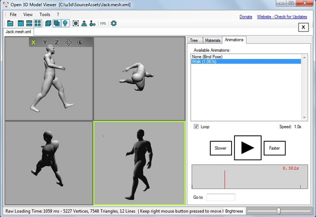

ucupumar
I want to mess around with few source asset on Urho git repo, but I couldn’t seem find the way to import mesh.xml file to Blender.
Do anyone know how to do this?


I want to mess around with few source asset on Urho git repo, but I couldn’t seem find the way to import mesh.xml file to Blender.
Do anyone know how to do this?

Hey ucupumar,
mesh.xml files are Ogre XML files. You’ll notice this with the Jack and Ninja model skeleton.xml files. I’m not sure what is the latest with the Blender Ogre importer but you can check this page out:
ogre3d.org/tikiwiki/BlenderImport
You can also use Assimp Viewer to convert static Ogre XML meshes files to Collada or OBJ then Blender, as for the skinned meshes it’s kinda broken afaik (or with the latest version I got here).
Open3D Model Viewer looks good too: open3mod.com/

Exports to Collada 1.4.1